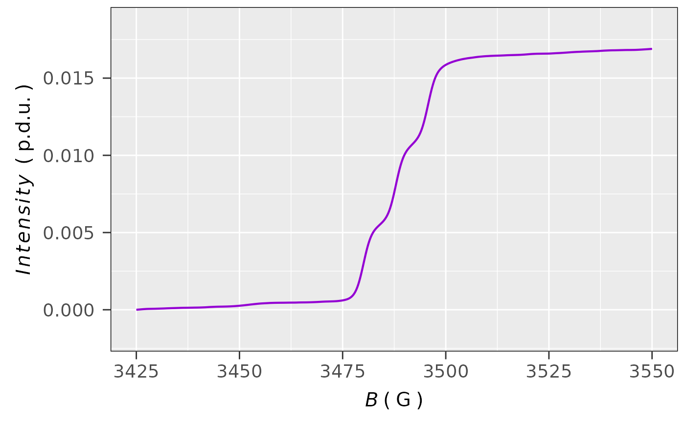

Integration of EPR Spectrum/Data for Quantitative Analysis
Source:R/eval_integ_EPR_Spec.R
eval_integ_EPR_Spec.RdEvaluates integrals of EPR spectra (based on the pracma::cumtrapz function)
depending on input data => either corresponding to derivative
or single integrated EPR signal form, with the option to correct the single integral baseline
by the polynomial fit of the poly.degree level. For EPR time/temperature/...etc spectral series,
(data frame must be available in tidy/long table format),
there is an option to integrate all EPR spectra literally in one step (see also Examples),
similarly to function available in acquisition/processing software at EPR spectrometers.
Usage
eval_integ_EPR_Spec(
data.spectr,
B = "B_G",
B.unit = "G",
Intensity = "dIepr_over_dB",
lineSpecs.form = "derivative",
Blim = NULL,
correct.integ = FALSE,
BpeaKlim = NULL,
poly.degree = NULL,
sigmoid.integ = FALSE,
output.vecs = FALSE
)Arguments
- data.spectr
Spectrum data frame/table object with magnetic flux density (in
mTorG) and that of the derivative or already single integrated intensity.indexcolumn may be already present as well.- B
Character string pointing to magnetic flux density column header (in the original
data.spectr) either inmilliteslaor inGauss, such asB = "B_mT"orB = "B_G"(default) orB = "Field"...etc.- B.unit
Character string pointing to unit of magnetic flux density, which is to be presented on \(x(B)\)-axis of the EPR spectrum, like
"G"("Gauss"),"mT"("millitesla") or"T"("Tesla"). Default:B.unit = "G".- Intensity
Character string pointing to column name of either derivative (e.g.
Intensity = "dIepr_over_dB", default) or single integrated EPR spectrum (e.g.Intensity = "single_Integrated") within the actualdata.spectr.- lineSpecs.form
Character string describing either
"derivative"(default) or"integrated"(i.e."absorption", which can be used as well) line form of the analyzed EPR spectrum/data.- Blim
Numeric vector, magnetic flux density in
mT/G/Tcorresponding to lower and upper limit of the selected \(B\)-region, e.g.Blim = c(3495.4,3595.4). Default:Blim = NULL(corresponding to the entire spectral \(B\)-range).- correct.integ
Logical, whether to correct the integral by baseline polynomial model fit. Default:
correct.integ = FALSE.- BpeaKlim
Numeric vector, magnetic flux density in
mT/G/Tcorresponding to lower and upper limit of the SELECTED \(B\)-PEAK REGION, e.g.BpeaKlim = c(3535.4,3555.4). This is the region (without the peak), which is actually not considered for the baseline fit.- poly.degree
Numeric, degree of the polynomial function used to fit baseline under the single integrated curve of the original EPR spectrum (see also
BpeaKlim).- sigmoid.integ
Logical, whether to involve (column in data frame) double integral or single integral (if the
data.spectrandIntesityare already in single integrated form), in sigmoid shape, which is required for the quantitative analysis, default:sigmoid.integ = FALSE.- output.vecs
Logical, whether the "integral" columns are presented within the original
data.spectrdata frame (output.vecs = FALSE, default) or called as a vectors or list for additional processing of spectral data series by dplyr (seeValuesandExamples).
Value
The integration results may be divided into following types, depending on the above-described
arguments. Generally, they are either data frames including the original data and the integrals
(output.vecs = FALSE) or vectors/vectors list, corresponding to individual baseline
corrected/uncorrected integrals (output.vecs = TRUE). This is especially useful
for spectral (time) series EPR data, which can be handily processed
by the group_by using the
pipe operators (%>%).
Data frame/table including EPR spectral data (general
Intensity(integrated or derivative) vs \(B\)) as well as its correspondingsingle(columnsingle_Integ) integral. This is the case if only a single uncorrected integral is required.Data frame/table with single integral/intensity already corrected by a certain degree of polynomial baseline (fitted to experimental baseline without peak). Single integrals are referred either to derivative or already integrated EPR spectra where corrected integral column header is denoted as
single_Integ_correct. This is the case ifcorrect.integ = TRUEandsigmoid.integ = FALSE+output.vecs = FALSE.Data frame with
singleanddouble/sigmoidintegral column/variable (sigmoid_Integ) essential for quantitative analysis. For such case it applies:output.vecs = FALSEandcorrect.integ = FALSE.Data frame in case of
correct.integ = TRUE,sigmoid.integ = TRUEandoutput.vecs = FALSE. It contains the original data frame columns + corrected single integral (single_Integ_correct) and double/sigmoid integral (sigmoid_Integ) which is evaluated from the baseline corrected single one. Therefore, such double/sigmoid integral is suitable for the accurate determination of radical (paramagnetic centers) amount.Numeric vector corresponding to baseline uncorrected/corrected single integral in case of
sigmoid.integ = FALSE+output.vecs = TRUE.List of numeric vectors corresponding to:
- single
Corrected or uncorrected single integral (in case of derivative form) depending on
correct.integargument.- sigmoid
Double integral (in case of derivative form) or single integral (in case of integrated spectral form) for quantitative analysis.
Details
The relative error of the cumulative trapezoidal (cumtrapz) function is minimal,
usually falling into the range of \(\langle 1,5\rangle\,\%\) or even lower, depending on the spectral
data resolution (see epperson2013introeprscope and LibreMath2023eprscope).
Therefore, the better the resolution, the more accurate the integral. If the initial EPR spectrum displays low
signal-to-noise ratio, the integral often looses its sigmoid-shape
and thus, the EPR spectrum has to be either simulated (see also vignette("functionality"))
or smoothed by the smooth_EPR_Spec_by_npreg, prior to integration. Afterwards,
integrals are evaluated from the simulated or smoothed EPR spectra.
For the purpose of quantitative analysis the integrals are evaluated using the B.units = "G"
(see Arguments). Therefore, depending on \(B\)-unit (G or mT or T) each resulting integral
column have to be optionally (in case of mT or T) multiplied by the factor of 10 or 10000,
respectively, because \(1\,\text{mT}\equiv 10\,\text{G}\) and \(1\,\text{T}\equiv 10^4\,\text{G}\).
Such corrections are already included in the function/script.
Instead of "double integral/integ." the term "sigmoid integral/integ." is used. "Double integral"
in the case of originally single integrated EPR spectrum (see data.spectr
and Intensity) is confusing. In such case, the EPR spectrum is integrated just once.
References
RWeberXenon2011eprscope
Rpracma2023eprscope
LibreMath2023eprscope
Math24net2023eprscope
epperson2013introeprscope
See also
Other Evaluations and Quantification:
eval_kinR_EPR_modelFit(),
eval_kinR_ODE_model(),
quantify_EPR_Abs(),
quantify_EPR_Norm_const()
Examples
## loading the built-in package example
## time series EPR spectra:
triarylamine.decay.series.dsc.path <-
load_data_example(file =
"Triarylamine_radCat_decay_series.DSC")
triarylamine.decay.series.asc.path <-
load_data_example(file =
"Triarylamine_radCat_decay_series.zip")
unzip(triarylamine.decay.series.asc.path,
exdir = tempdir()
)
## loading the kinetics:
triarylamine.decay.series.data <-
readEPR_Exp_Specs_kin(name.root =
"Triarylamine_radCat_decay_series",
dir_ASC = tempdir(),
dir_dsc_par =
system.file("extdata",
package = "eprscope")
)
#
## select the first spectrum
triarylamine.decay.series.data1st <-
triarylamine.decay.series.data$df %>%
dplyr::filter(time_s ==
triarylamine.decay.series.data$time[1])
#
## integrate the first spectrum with default arguments
triarylamine.decay.data1st.integ01 <-
eval_integ_EPR_Spec(triarylamine.decay.series.data1st)
#
## data frame preview
head(triarylamine.decay.data1st.integ01)
#> B_G time_s dIepr_over_dB B_mT single_Integ
#> <num> <num> <num> <num> <num>
#> 1: 3390.000 6 1.362932e-05 339.0000 1.035360e-04
#> 2: 3390.083 6 -1.013417e-06 339.0083 1.040616e-04
#> 3: 3390.167 6 -1.979480e-05 339.0167 1.031946e-04
#> 4: 3390.250 6 -2.982654e-05 339.0250 1.011271e-04
#> 5: 3390.333 6 -1.687075e-05 339.0333 9.918134e-05
#> 6: 3390.417 6 2.562919e-06 339.0417 9.858518e-05
#
## integration (including baseline correction)
## of the 1st spectrum from the series
triarylamine.decay.data1st.integ02 <-
eval_integ_EPR_Spec(triarylamine.decay.series.data1st,
## limits obtained from interactive spectrum:
BpeaKlim = c(3471.5,3512.5),
Blim = c(3425,3550),
correct.integ = TRUE,
poly.degree = 3,
sigmoid.integ = TRUE
)
#
## data frame preview
head(triarylamine.decay.data1st.integ02)
#> # A tibble: 6 × 8
#> B_G time_s dIepr_over_dB B_mT single_Integ baseline_Integ_fit
#> <dbl> <dbl> <dbl> <dbl> <dbl> <dbl>
#> 1 3425 6 -0.0000160 342. 0 -0.00000985
#> 2 3425. 6 -0.00000338 343. -0.000000808 -0.00000988
#> 3 3425. 6 0.0000173 343. -0.000000227 -0.00000991
#> 4 3425. 6 0.0000157 343. 0.00000115 -0.00000995
#> 5 3425. 6 -0.0000271 343. 0.000000678 -0.00000998
#> 6 3425. 6 0.00000128 343. -0.000000397 -0.0000100
#> # ℹ 2 more variables: single_Integ_correct <dbl>, sigmoid_Integ <dbl>
#
## plot the single integrated EPR spectrum,
## including baseline correction
plot_EPR_Specs(triarylamine.decay.data1st.integ02,
x = "B_G",
x.unit = "G",
Intensity = "single_Integ_correct",
lineSpecs.form = "integrated"
)
#
## plot corresponding to double/sigmoid integral,
## which is related to corrected single integral
plot_EPR_Specs(triarylamine.decay.data1st.integ02,
x = "B_G",
x.unit = "G",
Intensity = "sigmoid_Integ",
lineSpecs.form = "integrated"
)

#
## vectorized output of the uncorrected `sigmoid_integral`
triarylamine.decay.data1st.integ03 <-
eval_integ_EPR_Spec(triarylamine.decay.series.data1st,
sigmoid.integ = TRUE,
output.vecs = TRUE)[["sigmoid"]]
#
## preview of the first 6 values
triarylamine.decay.data1st.integ03[1:6]
#> [1] 0.006104700 0.006104722 0.006104730 0.006104615 0.006104333 0.006103946
#
## incorporation of vectorized integration into
## data "pipe" ("%>%") `dplyr` processing of EPR spectral
## time series, creating column with `sigmoid` integral
## where its corresponding single integral (intensity)
## has undergone a baseline correction, finally the max. value
## of all sigmoid integrals along with the time is
## summarized in data frame for quantitative kinetic analysis
triarylamine.decay.data.integs <-
triarylamine.decay.series.data$df %>%
dplyr::group_by(time_s) %>%
dplyr::filter(dplyr::between(B_G,3425,3550)) %>%
dplyr::mutate(sigmoid_Integ =
eval_integ_EPR_Spec(dplyr::pick(B_G,dIepr_over_dB),
correct.integ = TRUE,
BpeaKlim = c(3471.5,3512.5),
poly.degree = 3,
sigmoid.integ = TRUE,
output.vecs = TRUE)$sigmoid
) %>%
dplyr::summarize(Area = max(sigmoid_Integ))
## in such case `Blim` range is not defined by `eval_integ_EPR_Spec`,
## it must be `Blim = NULL`, however by `dplyr::between()` !!!
#
## preview of the final data frame
head(triarylamine.decay.data.integs)
#> # A tibble: 6 × 2
#> time_s Area
#> <dbl> <dbl>
#> 1 6 0.0169
#> 2 21 0.0179
#> 3 36 0.0169
#> 4 51 0.0172
#> 5 66 0.0184
#> 6 81 0.0158
#
## preview of the simple plot
ggplot2::ggplot(triarylamine.decay.data.integs) +
ggplot2::geom_point(ggplot2::aes(x = time_s,y = Area))
#
## this does not correspond to example
## in `eval_kinR_EPR_modelFit`, `eval_kin_EPR_ODE_model`
## or in `plot_theme_NoY_ticks` based on the same input data,
## as those `Area` vs `time` relations were evaluated using
## the simulated EPR spectra (see also `vignette("datasets")`)
#
if (FALSE) { # \dontrun{
## Similar to previous data processing, creating both: corrected
## single integral + sigmoid integral for each time within the spectral
## series. Sigmoid integral was evalutated from the single one by
## `cumtrapz()` function from `pracma` package and finally re-scaled.
triarylamine.decay.data.integs <-
triarylamine.decay.series.data$df %>%
dplyr::group_by(time_s) %>%
eval_integ_EPR_Spec(correct.integ = TRUE,
Blim = c(3425,3550),
BpeaKlim = c(3472.417,3505.5),
poly.degree = 3) %>%
dplyr::group_by(time_s) %>%
dplyr::mutate(sigmoid_Integ =
pracma::cumtrapz(B_G,single_Integ_correct)[,1]) %>%
dplyr::mutate(sigmoid_Integ_correct =
abs(min(sigmoid_Integ) - sigmoid_Integ))
} # }